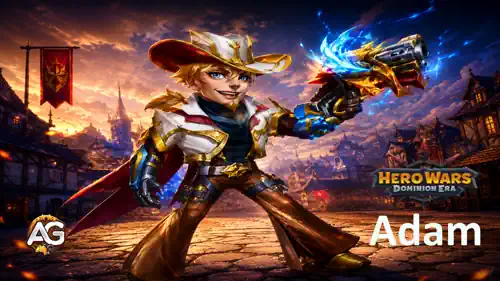
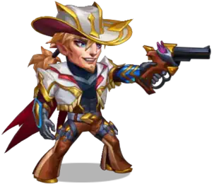
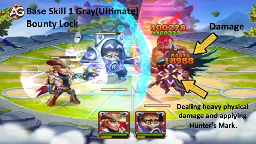
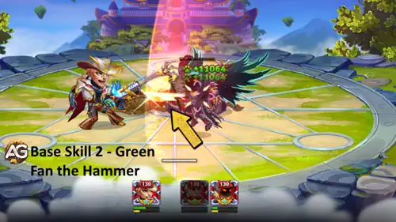
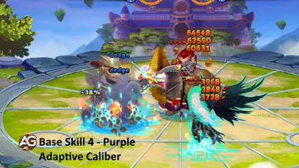
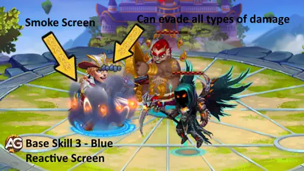
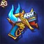

Guide d'Adam pour Hero Wars: Dominion Era
- Par: Alexandre Domingos. .
Adam est un heros Tireur tres mobile dans Hero Wars: Dominion Era, introduit comme personnage temporaire/d'evenement. Il excelle dans les degats explosifs cibles et utilise sa mecanique unique de Marque du chasseur pour accumuler des bonus et eliminer les cibles prioritaires. Son style de jeu recompense les rotations rapides de competences et les synergies avec des heros capables d'apporter des renforcements a toute l'equipe.
Dans ce guide, vous trouverez tout ce qu'il faut pour tirer le maximum d'Adam : ses competences et leur priorite d'amelioration, les meilleurs artefacts et glyphes, les compositions d'equipe ideales, les synergies, les contres et une evaluation complete dans la meta.


📋 Table des matieres d'Adam
- Qui est Adam ?
- Evaluation dans la meta
- Avantages et inconvenients
- Competences et priorite d'amelioration
- Patronage du familier
- Meilleurs skins
- Meilleurs artefacts
- Meilleurs glyphes
- Contre d'Adam
- Meilleurs heros de synergie
- Meilleurs drapeaux de guerre
- Meilleures equipes pour Adam
- Conclusion
Qui est Adam dans Hero Wars: Dominion Era ?

Adam est un tireur d'elite venu des terres frontieres, repute pour la precision de ses tirs et sa capacite a marquer ses cibles avec une exactitude mortelle. Arme de son emblématique Pistolet adaptatif Croc-d'etoile, il traque l'ennemi le plus puissant du champ de bataille et demantele methodiquement ses defenses a chaque tir. Bien qu'il soit actuellement indisponible par les moyens classiques, l'impact d'Adam dans les combats de fin de jeu est considerable.
- Classe : Tireur
- Position: #47
- Stat principale : Agilite
- Comment obtenir les pierres d'ame : Indisponible (temporaire)
- Patronage du familier : Fenris, Cain, Biscuit, Vex
- Meilleure synergie : Lyria, Electra, Polaris, Fafnir, Iris
Evaluation globale d'Adam dans la meta
- Controle : ⭐⭐
- Degats : ⭐⭐⭐⭐⭐
- Synergie : ⭐⭐⭐
- Autonomie : ⭐⭐⭐⭐
Adam - Statistiques maximales Hero Wars Dominion Era
| Stat | Valeur | Stat | Valeur |
|---|---|---|---|
| Agilite |  17,009 17,009 |
Intelligence |  3,247 3,247 |
| Force |  3,242 3,242 |
Sante |  450,732 450,732 |
| Attaque physique |  89,457 89,457 |
Attaque magique |  9,741 9,741 |
| Armure |  32,452 32,452 |
Defense magique |  14,879 14,879 |
| Esquive |  11,565 11,565 |
Precision |  17,009 17,009 |
| Penetration d'armure |  26,680 26,680 |
Puissance |  180,136 180,136 |
Avantages et inconvenients
✅ Avantages
- Degats explosifs eleves sur une cible unique
- La Marque du chasseur accumule l'attaque physique et la penetration d'armure
- Excellente synergie avec Lyria, Electra et Fafnir
- Bonne survie integree grace a l'esquive via Ecran reactif
- Excellent contre les heros de premiere ligne tres resistants
❌ Inconvenients
- Depend des cumuls de Marque du chasseur pour atteindre son pic de degats
- Est fortement contrarie par l'annulation d'ultime de Fluffy
- Capacite de degats de zone limitee
- Apporte relativement peu de controle a l'equipe
Priorite d'amelioration des competences d'Adam - Hero Wars: Dominion Era
Les ameliorations d'Adam doivent d'abord renforcer les schemas de degats et d'accumulation de marques qui definissent tout son kit, puis ameliorer les effets de soutien qui rendent la pression de sa Marque du chasseur plus difficile a contenir.
Valeurs calculées au niveau de compétence 130, avec 89,457 d’Attaque physique et 450,732 de Santé, skin de plage au maximum inclus, avant les bonus temporaires ou les cumuls de Calibre adaptatif. Résultats arrondis à l’entier le plus proche. Attaque de base : 89,457 (100% Attaque physique), avant réduction par l’armure ; intervalle : 4 secondes.
1 - Verrou de prime (Blanc/Ultime)
Description en jeu : Tire un projectile a tete chercheuse sur le heros ennemi sans Marque du chasseur le plus proche du centre de l'equipe adverse. Le tir applique la Marque du chasseur et inflige 275,643 degats. Si la cible meurt alors qu'elle est affectee par la Marque du chasseur, la capacite est immediatement reinitialisee.
Formule de la compétence: Dégâts = 250% Attaque physique + 400 × niveau de compétence = 275,643.
Explication de la competence : Verrou de prime est le principal outil de burst d'Adam et la source de sa mecanique de Marque du chasseur. Il tire un coup de precision sur l'ennemi sans marque le plus proche du centre, inflige de lourds degats physiques et applique la Marque du chasseur. Cette marque alimente directement Calibre adaptatif pour commencer a accumuler d'autres bonus. Si la cible marquee meurt, la competence est instantanement reinitialisee, ce qui permet a Adam d'enchainer les marques les unes apres les autres.

Priorite d'evolution : Tres haute - A ameliorer en premier, car c'est le principal declencheur de degats d'Adam et le point de depart de toute sa boucle de progression via la Marque du chasseur. Toutes les autres competences de son kit dependent d'une application rapide et repetee des marques.
2 - Rafale du marteau (Vert)
Description en jeu : Tire une serie de 3 coups sur l'ennemi le plus proche, infligeant 84,666 degats a chaque tir. S'il y a des ennemis sur le champ de bataille avec la Marque du chasseur, les tirs ricochent vers eux et infligent 48,883 degats. Temps de recharge : 7s
Formule de la compétence: Dégâts par tir sur la cible principale = 80% Attaque physique + 100 × niveau de compétence + 100 = 84,666. Dégâts par ricochet sur la cible marquée = 40% Attaque physique + 100 × niveau de compétence + 100 = 48,883.
Explication de la competence : Rafale du marteau ajoute une pression de zone au kit d'Adam, autrement tres oriente mono-cible. Il tire rapidement 3 coups sur l'ennemi le plus proche, et chaque coup ricoche vers toutes les cibles marquees sur le terrain. Plus Verrou de prime a applique de marques, plus d'ennemis subissent les ricochets simultanement. Rafale du marteau devient ainsi un outil de pression multi-cible contre les equipes groupees ou deja marquees.

Priorite d'evolution : Haute - A ameliorer en deuxieme, car les degats de ricochet evoluent directement avec le nombre de Marques du chasseur actives. Une fois Verrou de prime monte, Rafale du marteau multiplie la valeur de chaque marque presente sur le champ de bataille.
3 - Calibre adaptatif (Violet/Passif)
Description en jeu : Competence passive. Quand Adam inflige des degats physiques et ne perce pas totalement l'armure de la cible, sa penetration d'armure augmente de 3,781. Si Adam perce completement l'armure de la cible, son attaque physique augmente de 4,707. Les deux effets se cumulent et durent jusqu'a la fin du combat.
Formule de la compétence: Attaque physique par cumul = 0,9% Santé + 5 × niveau de compétence = 4,707. Pénétration d’armure par cumul = 3,5% Attaque physique + 5 × niveau de compétence = 3,781. Le premier bonus est obtenu lorsque Adam pénètre entièrement l’armure de la cible ; le second, dans le cas contraire. La Pénétration d’armure obtenue augmente avec son Attaque physique pendant le combat.
Explication de la competence : Calibre adaptatif est le moteur de progression passive d'Adam. Il reagit a chaque coup qu'il porte : si la cible conserve encore de l'armure, Adam gagne de la penetration d'armure pour finir par la transpercer ; une fois l'armure totalement percee, il gagne a la place de l'attaque physique brute. Les deux bonus sont permanents pour toute la duree du combat, ce qui signifie qu'Adam devient exponentiellement plus dangereux a mesure que le combat se prolonge.

Priorite d'evolution : Moyennement haute - A ameliorer en troisieme, car des niveaux plus eleves augmentent l'attaque physique et la penetration d'armure gagnees par cumul, ce qui renforce le potentiel de snowball qui rend Adam si dangereux dans les combats prolonges.
4 - Ecran reactif (Bleu)
Description en jeu : Une fois toutes les 10s, quand Adam subit des degats ennemis, un ecran de fumee est deploye sous lui pendant 5s. Tant qu'il se trouve dans l'ecran de fumee, Adam gagne 14,146 d'esquive supplementaire et peut esquiver tous les types de degats, pas seulement les degats physiques. Temps de recharge : 10s
Formule de la compétence: Esquive supplémentaire = 10% Attaque physique + 40 × niveau de compétence = 14,146. Durée de l’écran de fumée : 5 secondes ; intervalle : 10 secondes.
Explication de la competence : Ecran reactif est le seul outil defensif d'Adam et il s'active automatiquement des qu'il subit des degats. Un ecran de fumee apparait sous lui pendant 5 secondes, augmentant son esquive et lui permettant d'eviter aussi bien les degats physiques que magiques pendant cette fenetre. Comme il se declenche a la reception d'un coup plutot que sur un simple minuteur, il s'active de facon fiable au moment ou Adam en a le plus besoin.

Priorite d'evolution : Moyenne - A ameliorer en dernier, car la survie ne devient vraiment importante qu'une fois qu'Adam menace deja suffisamment l'adversaire pour meriter d'etre protege. Les niveaux superieurs augmentent le bonus d'esquive, mais offrent un rendement moindre par rapport aux competences offensives au debut.
Meilleur patronage pour Adam
Adam profite de plusieurs familiers via le systeme de patronage. Ses principales synergies sont avec Fenris (1er choix) pour les bonus d'attaque physique et avec Cain (2e choix) pour le soutien en penetration d'armure.
1re place : Fenris

Fenris augmente l'attaque physique d'Adam, ce qui renforce directement les degats de Verrou de prime ainsi que l'accumulation de la Marque du chasseur. C'est le meilleur choix de familier pour maximiser son potentiel offensif.
2e place : Cain

Cain fournit un soutien en penetration d'armure qui se combine avec la competence passive Calibre adaptatif d'Adam, l'aidant a percer plus efficacement les defenseurs a forte armure.
3e place : Biscuit

Biscuit apporte une utilite qui complete le kit d'Adam, avec un soutien supplementaire dans les combats ou le sustain et la reduction des soins sont essentiels.
4e place : Vex

Vex apporte une utilite supplementaire qui peut aider Adam dans des situations specifiques, avec un soutien interessant dans les combats ou les effets de controle et les debuffs comptent beaucoup.
Meilleurs skins pour Adam
Ordre d’amélioration recommandé : Plage → Par défaut → Cérémoniel. Privilégiez l’Attaque physique directe du skin de plage, puis l’attribut principal du skin par défaut, moins coûteux. Avancez le cérémoniel si Adam meurt avant de cumuler Calibre adaptatif ou si les gains liés à la Santé deviennent plus utiles dans les longs combats.
Skin par défaut
Gain de statistique: Agilité +1,365
Coût d’amélioration: 30,825 Pierres de skin d’agilité.
Priorité d’évolution: Haute — 2e – Une amélioration moins coûteuse de l’attribut principal d’Adam qui renforce son Attaque physique. C’est un choix pratique après le skin de plage, ou un début économique tant que celui-ci est indisponible. L’Agilité n’augmente pas directement l’Esquive ; sa contribution à l’Attaque physique améliore le bonus d’Esquive d’Écran réactif.
Skin cérémoniel
Gain de statistique: Santé +106,645
Coût d’amélioration: 55,410 Pierres de skin d’agilité.
Priorité d’évolution: Moyenne haute — 3e, plus tôt selon la situation – La Santé améliore la survie et renforce Calibre adaptatif : au maximum, ce skin ajoute environ 960 d’Attaque physique à chaque cumul obtenu lorsque Adam pénètre entièrement l’armure de la cible (0,9% de 106,645 de Santé). Ce gain est répété et conditionnel. Avancez ce skin avant celui par défaut lorsque la survie ou les cumuls prolongés constituent le facteur limitant.
Skin de plage
Gain de statistique: Attaque physique +7,095
Coût d’amélioration: 55,410 Pierres de skin d’agilité.
Priorité d’évolution: Très haute — 1er – Le meilleur skin pour les dégâts immédiats. L’Attaque physique améliore les attaques de base, Verrou de prime et chaque tir de Rafale du marteau. Au maximum, il ajoute aussi environ 710 d’Esquive à Écran réactif et 248 de Pénétration d’armure par activation de Calibre adaptatif lorsque Adam ne pénètre pas entièrement l’armure de la cible.
Meilleurs artefacts pour Adam
Les artefacts apportent des bonus de statistiques importants a haut niveau de progression. Priorisez d'abord l'artefact d'arme, car il influence directement les degats infliges par Adam.

Pistolet adaptatif Croc-d'etoile
Gain de statistique : Attaque physique +33,459
Priorite d'evolution : Tres haute - L'artefact d'arme signature d'Adam offre une enorme progression de l'attaque physique. C'est l'artefact indispensable pour maximiser l'accumulation de la Marque du chasseur et son DPS global.

Anneau d'agilite
Gain de statistique : Agilite +6,249
Priorite d'evolution : Haute - L'Anneau d'agilite renforce la statistique principale d'Adam, ameliorant a la fois son attaque physique et son esquive. Deuxieme priorite apres l'artefact d'arme.
Livre des illusions
Gain de statistique : Sante +83,649 | Esquive +4,647
Priorite d'evolution : Moyennement haute - Offre un melange equilibre de survie (sante) et d'esquive, ce qui complete la competence passive Ecran reactif d'Adam pour une meilleure tenue en combat.
Meilleurs glyphes pour Adam
Les glyphes offrent d'importants bonus de statistiques qui evoluent avec le niveau du heros. Concentrez-vous d'abord sur l'attaque physique pour maximiser le potentiel de degats de la Marque du chasseur, puis completez avec les statistiques de soutien.
Attaque physique
Gain de statistique : Attaque physique +4,340
Priorite d'evolution : Tres haute - Glyphe offensif central : il renforce directement toutes les competences d'Adam et les bonus de sa Marque du chasseur.
Penetration d'armure
Gain de statistique : Penetration d'armure +6,500
Priorite d'evolution : Haute - Se combine avec Calibre adaptatif pour dechirer les tanks ennemis. Essentiel dans les affrontements contre les equipes a forte armure.
Agilite
Gain de statistique : Agilite +1,135
Priorite d'evolution : Haute - Fait progresser la statistique principale d'Adam et lui apporte a la fois attaque physique et esquive.
Esquive
Gain de statistique : Esquive +1,995
Priorite d'evolution : Moyennement haute - Ameliore la survivabilite d'Adam et se combine bien avec sa competence Ecran reactif.
Armure
Gain de statistique : Armure +6,500
Priorite d'evolution : Moyenne - Fournit de la reduction des degats physiques, mais reste la derniere priorite face aux options offensives.
Meilleur contre d'Adam

Le principal contre d'Adam est Fluffy. La 4e competence de Fluffy annule l'ultime d'un ennemi exactement au moment ou elle est utilisee, inflige 7,654 degats et peut se declencher une fois toutes les 20 secondes. Comme tout le modele de degats d'Adam depend du fait que Verrou de prime applique la Marque du chasseur aussi souvent que possible, chaque annulation supprime une application de marque et bloque une reinitialisation potentielle de competence, coupant ainsi sa boucle d'accumulation pendant jusqu'a 20 secondes a chaque fois.
Meilleurs heros de synergie pour Adam
Adam donne ses meilleurs resultats aux cotes de heros qui maintiennent l'equipe en vie assez longtemps pour lui permettre d'accumuler ses Marques du chasseur, qui amplifient ses degats physiques ou qui augmentent la pression sur les cibles prioritaires. Voici les principaux heros de synergie :

La 2e competence d'Electra inflige des degats aux ennemis proches et convertit 399% de ces degats en soins pour l'equipe. Cette regeneration soutenue permet a la composition d'Adam de rester en vie assez longtemps pour que Verrou de prime puisse se reinitialiser plusieurs fois et que les Marques du chasseur s'accumulent completement.

Lame runique de Fafnir enchante l'allie a attaque physique qu'il protege et ajoute 34,164 degats physiques supplementaires a chaque attaque pendant 8 secondes. Quand Fafnir se lie a Adam, chaque impact de Verrou de prime et chaque ricochet de Rafale du marteau pendant cette fenetre recoit ce bonus fixe, ce qui amplifie directement la phase de burst d'Adam.

La 1re competence d'Iris, Ame exposee, expose l'ennemi le plus proche pendant 13 secondes. Tous les degats subis par l'ame exposee sont transferes a son proprietaire sous forme de degats purs, ignorant les resistances. Quand Adam utilise Verrou de prime sur une cible exposee, le coup devient du degat pur, ce qui augmente fortement son burst mono-cible contre cette cible prioritaire.

La 2e competence de Lyria la lie a l'allie ayant l'attaque physique la plus elevee, donc Adam, et accorde aux deux heros un bonus de vampirisme qui les aide a tenir dans les combats longs. Sa 4e competence passive reduit l'esquive de tous les ennemis de 19,978 et ajoute des degats physiques supplementaires aux attaques, ce qui permet aux tirs d'Adam de toucher plus regulierement et de frapper plus fort sur chaque cible marquee.

Aurores boreales de Polaris reduit de 10 le niveau des competences reactives et aleatoires ennemies, affaiblissant ainsi les outils defensifs a declenchement qui interrompraient autrement les degats d'Adam. Son aura prolonge egalement de 5% les effets de controle allies, ce qui laisse a Adam une fenetre plus large pour accumuler ses Marques du chasseur sans etre conteste.
Meilleurs drapeaux de guerre pour Adam dans Hero Wars
Adam profite surtout des drapeaux qui maintiennent sa premiere ligne en vie assez longtemps pour que la Marque du chasseur puisse s'accumuler, ou qui reduisent les soins ennemis dans les affrontements axes sur le sustain.

Drapeau de guerre de l'Avant-garde :
Une fois toutes les 4 secondes, soigne le heros de premiere ligne de votre equipe de 1.6% de sa sante maximale, plus 0.3% supplementaires pour chaque motif rouge insere.
Benefice pour Adam et l'equipe : Adam combat depuis une position mediane et a besoin que sa premiere ligne survive assez longtemps pour accumuler ses Marques du chasseur. L'Avant-garde permet a Fafnir ou a n'importe quel tank des meilleures equipes d'Adam de tenir plus longtemps, ce qui prolonge directement la fenetre pendant laquelle Adam peut accumuler ses degats et eliminer les cibles prioritaires sans interruption.

Drapeau de guerre du Declin :
Reduit les soins de l'equipe ennemie de 10% pendant toute la duree du combat.
Benefice pour Adam et l'equipe : Declin est le meilleur choix d'Adam contre les equipes de sustain et de soins. Tout son modele de degats depend du fait d'accumuler assez de marques pour burst les cibles prioritaires avant qu'elles ne recuperent. Reduire les soins ennemis de 10% rend cette fenetre de burst plus fiable et empeche les adversaires de survivre a sa phase d'accumulation.
Meilleures equipes pour Adam
Adam fonctionne le mieux dans des compositions basees sur les degats physiques qui soutiennent son style de jeu axe sur l'accumulation de marques. Voici les deux formations recommandees :
Equipe 1 - Burst physique (Recommandee)
| Drapeau de guerre | Familier | Heros 1 | Heros 2 | Heros 3 | Heros 4 | Heros 5 |
|---|---|---|---|---|---|---|
|
Avant-garde |

Axel |
Fafnir |
Adam |

Sebastian |
Lyria |
Electra |
Reserve de familiers : Oliver, Cain, Fenris, Biscuit, Axel. Fafnir renforce les degats physiques d'Adam, tandis que Lyria et Electra soutiennent l'equipe et maintiennent la pression offensive. Sebastian apporte un soutien supplementaire en soins et en energie.
Equipe 2 - Controle et burst
| Drapeau de guerre | Familier | Heros 1 | Heros 2 | Heros 3 | Heros 4 | Heros 5 |
|---|---|---|---|---|---|---|
|
Avant-garde |

Khorus |
Fafnir |
Adam |

Byrna |
Lyria |
Electra |
Reserve de familiers : Oliver, Cain, Khorus, Biscuit, Axel. Byrna remplace Sebastian comme option de soutien plus perturbatrice. Les degats de zone de Khorus aident a affaiblir les ennemis avant qu'Adam ne termine les cibles prioritaires.
Conclusion
Adam est un tireur puissant et precis, specialise dans l'elimination de l'ennemi le plus dangereux sur le terrain. Sa mecanique de Marque du chasseur cree un style de jeu gratifiant base sur l'accumulation, qui, avec la bonne equipe, conduit a des degats de plus en plus eleves au fil du combat. Ses artefacts principaux, le Pistolet adaptatif Croc-d'etoile et l'Anneau d'agilite, renforcent directement ses points forts, tandis que ses meilleurs skins apportent une progression supplementaire de ses statistiques.
Bien qu'Adam ne soit actuellement pas obtainable par les moyens standards, les joueurs qui le possedent devraient investir en priorite dans ses competences blanche et verte, construire des equipes autour de heros de synergie physique comme Electra, Fafnir et Lyria, et toujours surveiller la presence de Fluffy dans l'equipe adverse. Avec la bonne configuration, Adam peut devenir une force devastatrice dans les combats de Hero Wars: Dominion Era.
Decouvrez de nouvelles competences avec nos guides recommandes !


Laissez votre avis !
Avez-vous aime notre guide d'Adam ? Y a-t-il quelque chose que vous n'avez pas compris ou pour lequel vous aimeriez proposer des changements ? Nous vous invitons a rejoindre notre section de commentaires sur la page du blog Alexandre Games. N'hesitez pas a donner votre avis, a poser vos questions et a partager vos suggestions.
Cliquez sur le bouton ci-dessous pour commencer :